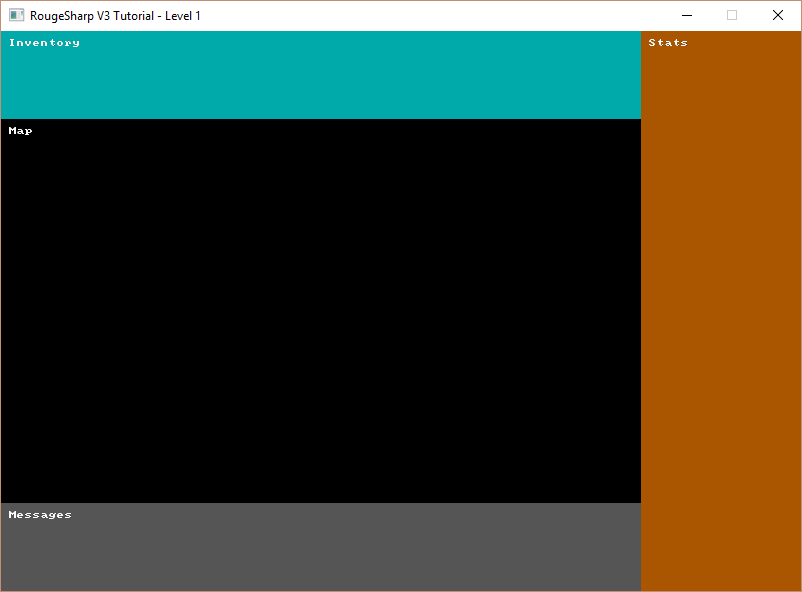

Multiple Consoles
In this tutorial we’ll create sub consoles for each part of our game window and Blit them to the root console.

Sub Consoles
Our game is more than a map. It will also have areas for the inventory, player statistics, and a message log. We could just draw all these directly to the root console but it will be better to draw each to their own console and Blit them to the root in their correct positions.
Defining Console Dimensions
First we need to define the width and height of each of our sub-consoles and declare each RLConsole. At the top of Game.cs add the following code:
public static class Game
{
// The screen height and width are in number of tiles
private static readonly int _screenWidth = 100;
private static readonly int _screenHeight = 70;
private static RLRootConsole _rootConsole;
// The map console takes up most of the screen and is where the map will be drawn
private static readonly int _mapWidth = 80;
private static readonly int _mapHeight = 48;
private static RLConsole _mapConsole;
// Below the map console is the message console which displays attack rolls and other information
private static readonly int _messageWidth = 80;
private static readonly int _messageHeight = 11;
private static RLConsole _messageConsole;
// The stat console is to the right of the map and display player and monster stats
private static readonly int _statWidth = 20;
private static readonly int _statHeight = 70;
private static RLConsole _statConsole;
// Above the map is the inventory console which shows the players equipment, abilities, and items
private static readonly int _inventoryWidth = 80;
private static readonly int _inventoryHeight = 11;
private static RLConsole _inventoryConsole;
// ... additional code omitted
}
Instantiate the Consoles
Now we need to new up our four consoles with the widths and heights that we defined. In our Main() just after the line where we make a new RLRootConsole add the following code:
public static void Main()
{
// ... previous code omitted
// After the line that starts _rootConsole = new RLRootConsole( ...
// Initialize the sub consoles that we will Blit to the root console
_mapConsole = new RLConsole( _mapWidth, _mapHeight );
_messageConsole = new RLConsole( _messageWidth, _messageHeight );
_statConsole = new RLConsole( _statWidth, _statHeight );
_inventoryConsole = new RLConsole( _inventoryWidth, _inventoryHeight );
// ... additional code omitted
}
Set Background Color and Label
Next we’ll want to set the background color of each console and put a label on them so that we can verify that they are in the correct positions when we Blit them to the Root console. In OnRootConsoleUpdate() replace _rootConsole.Print( 10, 10, “It worked!”, RLColor.White ); with the following code:
private static void OnRootConsoleUpdate( object sender, UpdateEventArgs e )
{
// Set background color and text for each console
// so that we can verify they are in the correct positions
_mapConsole.SetBackColor( 0, 0, _mapWidth, _mapHeight, RLColor.Black );
_mapConsole.Print( 1, 1, "Map", RLColor.White );
_messageConsole.SetBackColor( 0, 0, _messageWidth, _messageHeight, RLColor.Gray );
_messageConsole.Print( 1, 1, "Messages", RLColor.White );
_statConsole.SetBackColor( 0, 0, _statWidth, _statHeight, RLColor.Brown );
_statConsole.Print( 1, 1, "Stats", RLColor.White );
_inventoryConsole.SetBackColor( 0, 0, _inventoryWidth, _inventoryHeight, RLColor.Cyan );
_inventoryConsole.Print( 1, 1, "Inventory", RLColor.White );
}
Blit and Render
The final step we’ll need to take is to update OnRootConsoleRender() to Blit each of our consoles to the root console in the correct positions. The RLNET method we will use is RLConsole.Blit which takes several parameters.
A source console
- The X and Y position of the top left corner of a rectangular area from the source
- The width and height of the rectangular area from the source that we will be Blitting
- A destination console to Blit to
- The X and Y position of the top left corner of where we will Blit to in the destination console
private static void OnRootConsoleRender( object sender, UpdateEventArgs e )
{
// Blit the sub consoles to the root console in the correct locations
RLConsole.Blit( _mapConsole, 0, 0, _mapWidth, _mapHeight,
_rootConsole, 0, _inventoryHeight );
RLConsole.Blit( _statConsole, 0, 0, _statWidth, _statHeight,
_rootConsole, _mapWidth, 0 );
RLConsole.Blit( _messageConsole, 0, 0, _messageWidth, _messageHeight,
_rootConsole, 0, _screenHeight - _messageHeight );
RLConsole.Blit( _inventoryConsole, 0, 0, _inventoryWidth, _inventoryHeight,
_rootConsole, 0, 0 );
// Tell RLNET to draw the console that we set
_rootConsole.Draw();
}
And that’s it! If you run the program now you should see output similar to the screenshot at the beginning of this post.
Code on GitHub
As always the code for the tutorial series so far can be found on GitHub:
Bored waiting for the next tutorial? The complete tutorial project is already finished and the source code is available on Github:
- Sample Roguelike game using RogueSharp and RLNet console
- Sample Roguelike game using RogueSharp and SadConsole
Closing thoughts
So far we haven’t used RogueSharp at all. I think it is necessary to do some of these basic setup tasks to pave the way for the future. Don’t worry though we’ll be getting into RogueSharp functionality shortly.